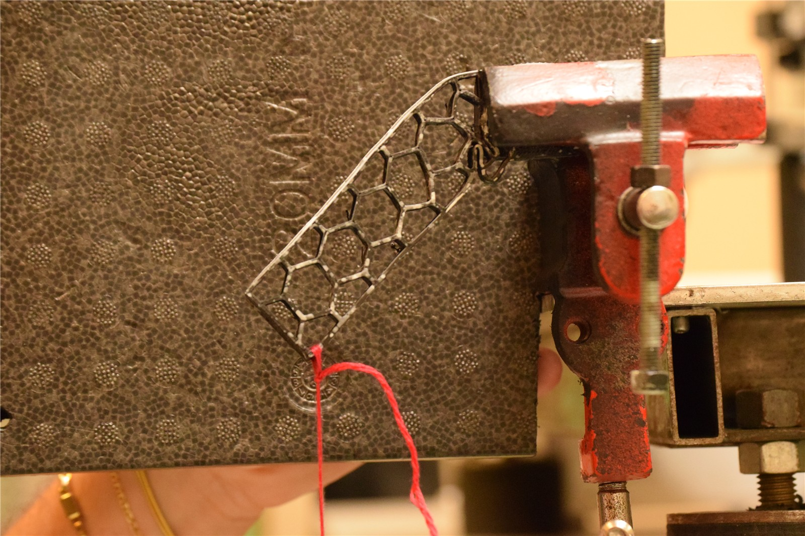

Obiettivo del progetto
Analizzare la risposta di un campione trabecolare in nylon stampato in 3D attraverso la correlazione di immagini e confrontarne il comportamento prima e dopo il danneggiamento.
Attività del gruppo
- Preparazione dello speckle e acquisizione fotografica con carichi applicati tramite masse calibrate.
- Selezione della ROI, definizione di subset e seed, calibrazione della scala ed elaborazione dei campi con Ncorr in MATLAB.
- Confronto fra provino integro e danneggiato e valutazione dell'influenza di qualità ottica e parametri di correlazione.
Risultati
I campi di spostamento risultano coerenti con la previsione macroscopica. Il confronto evidenzia una maggiore flessione del provino danneggiato a parità di carico. Il lavoro mette in evidenza quanto il controllo dell'acquisizione sia importante per la qualità della misura.
Ipotesi e limiti
Il cambio di zoom rende non valido il confronto fra alcuni step di carico: per il provino integro viene utilizzato lo step valido da 500 g. Le dimensioni dello speckle limitano l'affidabilità quantitativa delle deformazioni locali.

Ruolo nel progetto
Partecipazione al progetto universitario in un team di tre persone. Acquisizione, elaborazioni e conclusioni sono presentate come lavoro del gruppo.
Immagini tratte dagli elaborati del team. Scheda di sintesi per il portfolio; documentazione completa disponibile su richiesta.